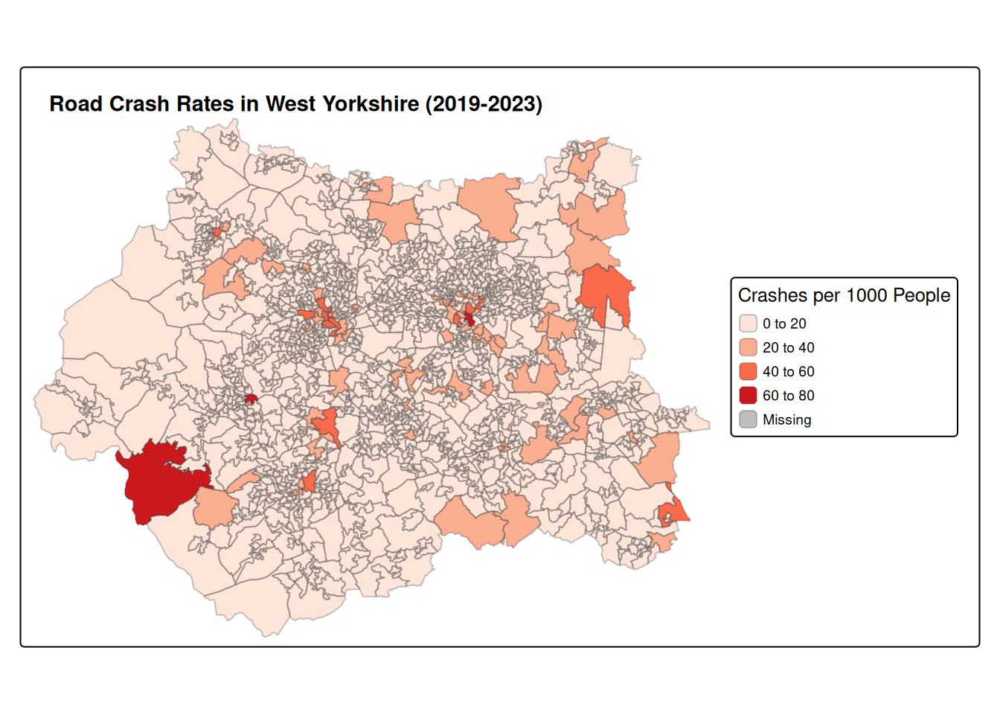
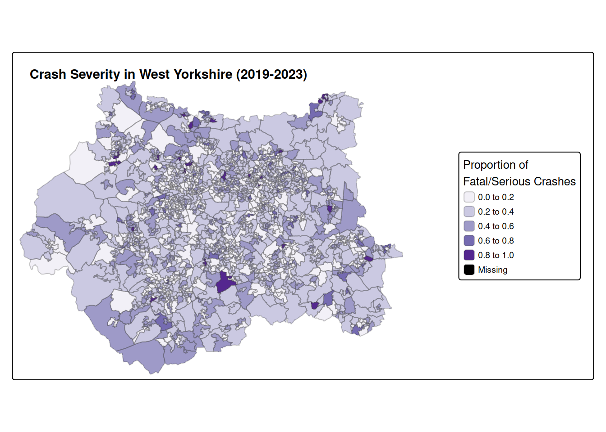

# Load required libraries
library(tidyverse) # Data manipulation and visualisation
library(sf) # Simple features for spatial data
library(stats19) # Package for road crash data
library(tmap) # Thematic mappingPractical 6: Joins and aggregations
1 Introduction
In this practical session, we will explore techniques for joining, combining and aggregating datasets in R, particularly for spatial data. We’ll work with road crash data (STATS19), Lower Super Output Area (LSOA) boundaries, and census population data for West Yorkshire. Through this practical, you’ll learn:
- How to perform spatial joins between point and polygon data
- How to join tables using common identifiers (key-based joins)
- How to calculate and visualize derived metrics from joined datasets
The skills developed in this practical are essential for transport data scientists who often need to combine data from various sources to gain comprehensive insights.
1.1 Required libraries
First, let’s load the libraries we’ll need for this practical:
2 Data acquisition and preparation
2.1 Downloading STATS19 crash data
We’ll begin by downloading road crash data for four years (2019-2022) using the stats19 package:
# Download STATS19 crash data for 2019-2023
# We're downloading data for multiple years to have a robust dataset
crashes_2019 = get_stats19(year = 2019, type = "accidents", ask = FALSE)
crashes_2020 = get_stats19(year = 2020, type = "accidents", ask = FALSE)
crashes_2021 = get_stats19(year = 2021, type = "accidents", ask = FALSE)
crashes_2022 = get_stats19(year = 2022, type = "accidents", ask = FALSE)
crashes_2023 = get_stats19(year = 2023, type = "accidents", ask = FALSE)The get_stats19() function downloads the crash data. The parameters used are:
year: Specifies which year’s data to downloadtype: Selects the type of data (accidents, vehicles, or casualties)ask = FALSE: Automatically downloads without prompting for confirmation
2.2 Combining multiple years of data
Once we have the individual year datasets, we can combine them into a single dataframe using bind_rows():
# Combine all years into one dataset
# This creates a unified dataset for analysis across the full time period
crashes = bind_rows(crashes_2019, crashes_2020, crashes_2021, crashes_2022, crashes_2023)
# Let's check the dimensions of our combined dataset
dim(crashes)[1] 520084 38bind_rows() from dplyr appends the rows from each dataset, creating a unified dataset spanning all four years.
bind_rows() vs rbind() in R (click to expand)
Both bind_rows() and rbind() combine data frames row-wise, but they differ in behaviour and flexibility.
rbind() (Base R)
- Comes from base R
- Requires exactly matching column names and types
- Will throw an error if the data frames don’t align perfectly
df1 = data.frame(a = 1:2, b = c("x", "y"))
df2 = data.frame(a = 3:4, b = c("z", "w"))
rbind(df1, df2) # ✅ Worksdf3 = data.frame(a = 5:6, c = c("a", "b"))
rbind(df1, df3) # ❌ Error: column names do not matchbind_rows() (from dplyr)
- Part of the tidyverse
- More flexible than
rbind() - Automatically fills in missing columns with NAs
library(dplyr)
df1 = data.frame(a = 1:2, b = c("x", "y"))
df3 = data.frame(a = 5:6, c = c("a", "b"))
bind_rows(df1, df3) # ✅ Works, fills missing columns with NASummary Comparison
| Feature | rbind() |
bind_rows() |
|---|---|---|
| From | Base R | dplyr (tidyverse) |
| Requires same cols? | ✅ Yes | ❌ No |
| Fills missing cols | ❌ Error | ✅ With NA |
| Ideal use case | Controlled data | Flexible data wrangling |
Tip
- Use
rbind()if you’re sure the data frames have identical structure. - Use
bind_rows()for robust and flexible row-binding, especially in pipelines.
2.3 Converting crash data to sf object
To enable spatial operations, we need to convert our crash data into an sf (simple features) object:
# Creating geographic crash data
# This converts the data frame into a spatial object with point geometries
crashes_sf = format_sf(crashes)93 rows removed with no coordinateshead(crashes_sf)Simple feature collection with 6 features and 36 fields
Geometry type: POINT
Dimension: XY
Bounding box: xmin: 524920 ymin: 172463 xmax: 540188 ymax: 185266
Projected CRS: OSGB36 / British National Grid
# A tibble: 6 × 37
accident_index accident_year accident_reference longitude latitude
<chr> <int> <chr> <int> <int>
1 2019010128300 2019 010128300 NA NA
2 2019010152270 2019 010152270 NA NA
3 2019010155191 2019 010155191 NA NA
4 2019010155192 2019 010155192 NA NA
5 2019010155194 2019 010155194 NA NA
6 2019010155195 2019 010155195 NA NA
# ℹ 32 more variables: police_force <chr>, accident_severity <chr>,
# number_of_vehicles <chr>, number_of_casualties <chr>, date <date>,
# day_of_week <chr>, time <chr>, local_authority_district <chr>,
# local_authority_ons_district <chr>, local_authority_highway <chr>,
# first_road_class <chr>, first_road_number <chr>, road_type <chr>,
# speed_limit <chr>, junction_detail <chr>, junction_control <chr>,
# second_road_class <chr>, second_road_number <chr>, …The format_sf() function from the stats19 package converts the crash coordinates into a spatial object. The note you see indicates that rows with missing coordinate values are automatically removed, as spatial objects cannot have NA values for coordinates/geometry.
2.4 Filtering for West Yorkshire
We’ll now filter the crash data to include only incidents that occurred within the West Yorkshire police force area:
# Filter crashes to only those that occurred in West Yorkshire
crashes_wy = crashes_sf |> filter(police_force == "West Yorkshire")
# Compare the number of rows before and after filtering
# This shows how many crashes occurred in West Yorkshire vs. the whole dataset
nrow(crashes_sf)[1] 519991nrow(crashes_wy)[1] 189123 Spatial joins
3.1 What is a spatial join?
A spatial join combines two spatial datasets based on their geographic relationship — e.g., whether one geometry intersects, contains, or is within another.
In R, we use the sf package to handle spatial joins with functions like:
st_join(x, y, join = st_intersects)x: the primary spatial object (e.g. point or line data)y: the reference spatial object (e.g. polygons)st_intersects,st_within,st_contains, etc. define the spatial relationship
Spatial relations (click to expand)

Why is it useful in transport data science?
Spatial joins are essential tools in transport data science for:
- Mapping transport observations (e.g. crashes, stops, GPS traces) to zones or regions
- Enriching data with attributes from other layers (e.g. population, accessibility, land use)
- Aggregating or summarising transport data by spatial units
They allow you to combine spatially referenced datasets in meaningful ways to gain insights and build models. We’ll use this technique to identify which LSOA each crash occurred in.
3.2 Loading LSOA boundary data
First, we load the LSOA (Lower Super Output Area) boundaries for West Yorkshire:
# Load the 2021 LSOA boundary data for West Yorkshire
lsoa_wy = read_sf("https://github.com/itsleeds/tds/releases/download/2025/p6-lsoa_boundary_wy.geojson")
# Retain only useful variables: LSOA code (lsoa21cd) and LSOA name (lsoa21nm)
lsoa_wy = lsoa_wy |> select(lsoa21cd, lsoa21nm)
# Check the structure of the data to understand what we're working with
glimpse(lsoa_wy)Rows: 1,404
Columns: 3
$ lsoa21cd <chr> "E01010568", "E01010569", "E01010570", "E01010571", "E0101057…
$ lsoa21nm <chr> "Bradford 016A", "Bradford 016B", "Bradford 018A", "Bradford …
$ geometry <MULTIPOLYGON [m]> MULTIPOLYGON (((416422.2 43..., MULTIPOLYGON (((…# How many LSOAs are in our dataset?
# The cat() function in R is short for “concatenate and print”
cat("Number of LSOAs in West Yorkshire:", nrow(lsoa_wy))Number of LSOAs in West Yorkshire: 1404LSOAs are small geographic areas in the UK designed for reporting census and other neighborhood statistics. Each LSOA typically contains 400-1,200 households, and usually have a resident population of 1,000-3,000 people. We’re using the 2021 LSOA boundaries, which align with the most recent UK Census.
3.3 Performing a Spatial Join
Now we’ll perform a spatial join to determine which LSOA each crash occurred in:
# Perform spatial join to determine which LSOA each crash occurred in
# This adds LSOA information to each crash point
crashes_in_lsoa = st_join(lsoa_wy, crashes_wy)
# Check which columns were added from the LSOA dataset
# setdiff finds column names that are new in crashes_in_lsoa
added_columns = setdiff(colnames(crashes_in_lsoa), colnames(crashes_wy))
# The collapse argument is used in the paste() function,
# and it controls how to combine multiple elements into a single string.
# Here we add ", " between elements
cat("Columns added from LSOA data:", paste(added_columns, collapse=", "),"\n")Columns added from LSOA data: lsoa21cd, lsoa21nm # Check if any crashes couldn't be assigned to an LSOA
na_lsoa = sum(is.na(crashes_in_lsoa$lsoa21cd))
cat("Number of crashes not matching any LSOA:", na_lsoa)Number of crashes not matching any LSOA: 0The st_join() function links each crash point to the LSOA polygon that contains it. By default, it performs a “within” operation, checking if each point in the first dataset falls within any polygon in the second dataset. After this operation, each crash record will have additional columns from the LSOA dataset, including the LSOA code and name.
We use the setdiff() function to find column names that are new in crashes_in_lsoa — i.e., the ones that come from lsoa_wy.
3.4 Aggregating Crashes by LSOA
Next, we’ll aggregate the crash data to count how many crashes of each severity occurred in each LSOA:
# Aggregate crash data by LSOA, counting crashes of each severity
lsoa_crashes_count = crashes_in_lsoa |>
# Remove geometry column as we only need tabular data for aggregation
st_drop_geometry() |>
# Group by LSOA identifiers
group_by(lsoa21cd) |>
# Count crashes by severity level
summarise(
all_crashes_n = n(), # Total number of crashes
fatal_crashes_n = sum(accident_severity == "Fatal"), # Number of fatal crashes
serious_crashes_n = sum(accident_severity == "Serious"), # Number of serious crashes
slight_crashes_n = sum(accident_severity == "Slight") # Number of slight crashes
)
# Display the first few rows of the aggregated data
head(lsoa_crashes_count)# A tibble: 6 × 5
lsoa21cd all_crashes_n fatal_crashes_n serious_crashes_n slight_crashes_n
<chr> <int> <int> <int> <int>
1 E01010568 9 0 0 9
2 E01010569 4 0 2 2
3 E01010570 2 0 0 2
4 E01010571 27 0 7 20
5 E01010572 5 1 3 1
6 E01010573 15 1 5 94 Key-Based Joins
In addition to spatial joins, we often need to join datasets based on common identifiers or keys. This is particularly useful for combining spatial data with non-spatial attributes.
Recap - join functions (click to expand)
The dplyr package provides a family of intuitive join functions:
| Join Type | Function | Description |
|---|---|---|
| Inner Join | inner_join(df1, df2, by = "key") |
Keeps only matching rows in both datasets. |
| Left Join | left_join(df1, df2, by = "key") |
Keeps all rows from df1, adds matching rows from df2. |
| Right Join | right_join(df1, df2, by = "key") |
Keeps all rows from df2, adds matching rows from df1. |
| Full Join | full_join(df1, df2, by = "key") |
Keeps all rows from both datasets. |
| Semi Join | semi_join(df1, df2, by = "key") |
Keeps rows from df1 that have matches in df2. |
| Anti Join | anti_join(df1, df2, by = "key") |
Keeps rows from df1 that do not have matches in df2. |
4.1 Joining aggregated crash count data to LSOA Boundaries
Now we’ll join the aggregated crash counts back to the LSOA boundary data:
# Join crash count data back to LSOA boundaries
# This preserves the spatial information while adding the crash statistics
lsoa_crashes_wy = lsoa_wy |>
left_join(lsoa_crashes_count, by = "lsoa21cd")
# Check the columns in our joined dataset
colnames(lsoa_crashes_wy)[1] "lsoa21cd" "lsoa21nm" "geometry"
[4] "all_crashes_n" "fatal_crashes_n" "serious_crashes_n"
[7] "slight_crashes_n" # Replace NA values with 0 for LSOAs that had no crashes
lsoa_crashes_wy = lsoa_crashes_wy |>
mutate(across(c(all_crashes_n, fatal_crashes_n, serious_crashes_n, slight_crashes_n),
~replace_na(., 0)))
# Count how many LSOAs had zero crashes
zero_crash_lsoas = sum(lsoa_crashes_wy$all_crashes_n == 0)
cat("Number of LSOAs with zero recorded crashes:", zero_crash_lsoas, "\n")Number of LSOAs with zero recorded crashes: 0 cat("Percentage of LSOAs with zero crashes:", round((zero_crash_lsoas/nrow(lsoa_crashes_wy))*100, 2), "%\n")Percentage of LSOAs with zero crashes: 0 %We use left_join() to preserve all LSOAs, even those with no crashes. The by parameter specifies the columns to use for matching rows between the datasets. After this join, we have the spatial boundaries with the crash counts attached.
We also replace NA values with 0 for LSOAs that had no crashes, and calculate how many LSOAs had zero crashes recorded.
Question: What happens if you use right_join() instead?
4.2 Loading census population data
We’ll now load census population data for the LSOAs, the census data is obtained from nomis, specifically the Number of usual residents in households and communal establishments in each LSOA. The data has been further cleaned for better processing.
# Load 2021 Census population data for LSOAs
pop_lsoa = read_csv("https://github.com/itsleeds/tds/releases/download/2025/p6-census2021_lsoa_pop.csv")
# Display the first few rows
head(pop_lsoa)# A tibble: 6 × 3
lsoa21cd lsoa21nm pop
<chr> <chr> <dbl>
1 E01011954 Hartlepool 001A 2284
2 E01011969 Hartlepool 001B 1344
3 E01011970 Hartlepool 001C 1070
4 E01011971 Hartlepool 001D 1323
5 E01033465 Hartlepool 001F 1955
6 E01033467 Hartlepool 001G 2264# Basic summary statistics of the population data
summary(pop_lsoa$pop) Min. 1st Qu. Median Mean 3rd Qu. Max.
996 1440 1605 1671 1833 9899 This dataset contains population figures from the 2021 UK Census for each LSOA in England and Wales.
4.3 Joining population data
Next, we’ll join the population data to our LSOA crash data using the LSOA codes and names as keys:
# Join population data to our LSOA crash data
lsoa_crashes_wy = lsoa_crashes_wy |>
left_join(pop_lsoa, by = c("lsoa21cd", "lsoa21nm"))
# Check the first few rows of our joined dataset
head(lsoa_crashes_wy)Simple feature collection with 6 features and 7 fields
Geometry type: MULTIPOLYGON
Dimension: XY
Bounding box: xmin: 412793.8 ymin: 437902.1 xmax: 417449.3 ymax: 441428.7
Projected CRS: OSGB36 / British National Grid
# A tibble: 6 × 8
lsoa21cd lsoa21nm geometry all_crashes_n fatal_crashes_n
<chr> <chr> <MULTIPOLYGON [m]> <int> <int>
1 E01010568 Bradford 01… (((416422.2 439366.3, 41… 9 0
2 E01010569 Bradford 01… (((415369 439212.5, 4153… 4 0
3 E01010570 Bradford 01… (((414005.3 439379, 4141… 2 0
4 E01010571 Bradford 01… (((415768.6 438654.7, 41… 27 0
5 E01010572 Bradford 01… (((415616.8 439194.6, 41… 5 1
6 E01010573 Bradford 01… (((414068.4 441337, 4140… 15 1
# ℹ 3 more variables: serious_crashes_n <int>, slight_crashes_n <int>,
# pop <dbl># Check if we have any missing population values after the join
missing_pop = sum(is.na(lsoa_crashes_wy$pop))
cat("Number of LSOAs with missing population data:", missing_pop, "\n")Number of LSOAs with missing population data: 0 This operation adds the population data to our existing dataset, allowing us to calculate per-capita crash rates.
5 Creating new metrics
With our datasets joined, we can now create (mutate()) new metrics that provide more insight than the raw counts.
5.1 Calculating Crashes Per Person
We’ll calculate the number of crashes per person for each LSOA:
# Calculate crashes per person for each LSOA
lsoa_crashes_wy = lsoa_crashes_wy |>
mutate(
# Crashes per person (raw rate)
crash_pp = all_crashes_n/pop,
# Crashes per 1000 people (more intuitive scale)
crash_per_1000 = crash_pp * 1000,
# Proportion of crashes that were fatal or serious
severity_ratio = (fatal_crashes_n + serious_crashes_n) / all_crashes_n
)
# Replace NaN values in severity_ratio (from dividing by zero)
lsoa_crashes_wy$severity_ratio[is.nan(lsoa_crashes_wy$severity_ratio)] = 0
# Summary statistics of our derived metrics
summary(lsoa_crashes_wy$crash_pp) Min. 1st Qu. Median Mean 3rd Qu. Max.
0.0005053 0.0031756 0.0057412 0.0079535 0.0096852 0.0706781 summary(lsoa_crashes_wy$crash_per_1000) Min. 1st Qu. Median Mean 3rd Qu. Max.
0.5053 3.1756 5.7412 7.9535 9.6852 70.6781 summary(lsoa_crashes_wy$severity_ratio) Min. 1st Qu. Median Mean 3rd Qu. Max.
0.0000 0.1534 0.2500 0.2696 0.3640 1.0000 These derived metrics normalize the crash counts by population, allowing for more meaningful comparisons between areas with different population sizes. Areas with higher values have more crashes relative to their population.
6 Visualisation
Finally, let’s visualise our results using the tmap package:
# Set tmap mode to static plotting
tmap_mode("plot")
# Create a more intuitive map showing crashes per 1000 people
map_crashes_per_1000 = tm_shape(lsoa_crashes_wy) +
tm_polygons(col = "crash_per_1000",
title = "Crashes per 1000 People",
palette = "Reds",
border.alpha = 0.3) +
tm_layout(title = "Road Crash Rates in West Yorkshire (2019-2023)",
title.size = 0.9,
title.fontface = "bold",
legend.position = c("right", "center"),
legend.text.size = 0.6,
legend.title.size = 0.8,
legend.outside = TRUE,
legend.outside.position = "right",
inner.margins = c(0.02,0.02,0.1, 0.4), # bottom,left,top,right
outer.margins = c(0.02, 0.02, 0.02, 0.02))
# Display the map
map_crashes_per_1000
# Create a map showing the severity ratio
map_severity = tm_shape(lsoa_crashes_wy) +
tm_polygons(col = "severity_ratio",
title = "Proportion of \nFatal/Serious Crashes",
palette = "Purples",
border.alpha = 0.3) +
tm_layout(title = "Crash Severity in West Yorkshire (2019-2023)",
title.size = 0.9,
title.fontface = "bold",
legend.position = c("right", "center"),
legend.text.size = 0.6,
legend.title.size = 0.8,
legend.outside = TRUE,
legend.outside.position = "right",
inner.margins = c(0.02,0.02,0.1, 0.5), # bottom,left,top,right
outer.margins = c(0.02, 0.02, 0.02, 0.02))
# Display the map
map_severity
These maps create choropleth visualizations where: - Each LSOA is colored according to its crash rate or severity ratio - The color palettes use darker colors to indicate higher values
7 References
- Lovelace, R., Morgan, M., Talbot, J., & Lucas-Smith, M. (2020). stats19: A package for working with open road crash data. Journal of Open Source Software, 5(47), 1181. https://doi.org/10.21105/joss.01181